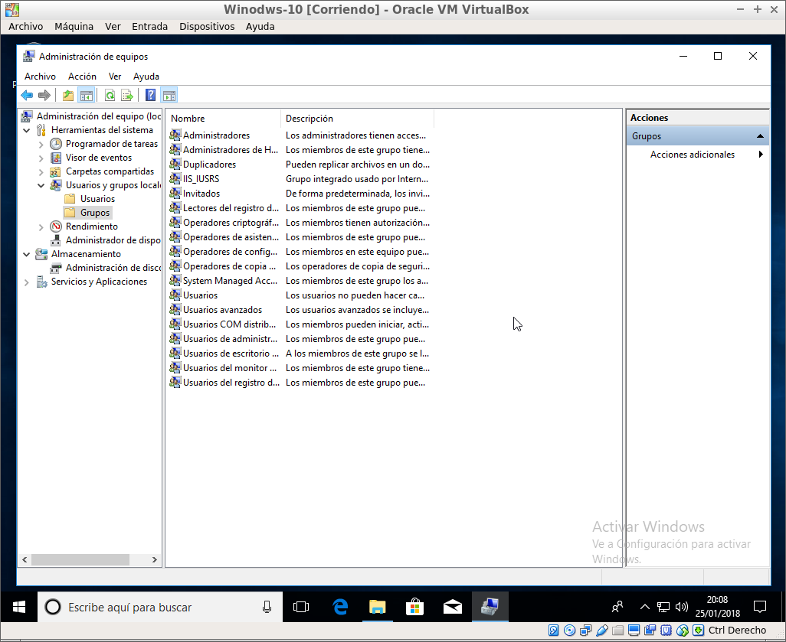

8. Gestión de Usuarios y Grupos en Windows
8.1. Usuarios
En el contexto de la informática, un usuario es una persona que utiliza un sistema informático. Para obtener seguridad, acceso al sistema y administración de recursos, los usuarios deben identificarse a través de una cuenta de usuario asociada a una contraseña.
Los usuarios utilizan una interfaz de usuario para acceder a los sistemas, y este proceso de identificación se conoce como "login."
Fuente: Wikipedia - Cuenta de usuario
Para administrar la seguridad y privacidad de un equipo de manera efectiva, se recomienda crear distintas cuentas de usuario. Los problemas asociados con el uso compartido de un equipo por varias personas incluyen:
- Acceso, modificación o eliminación de información de otros usuarios.
- Cambios en las configuraciones del equipo que afecten la seguridad o usabilidad.
- Instalación o desinstalación de software por cualquier usuario.
Cuando un equipo tiene usuarios individuales con privilegios controlados, muchos de estos problemas se solucionan, ya que cada usuario está claramente diferenciado.
8.1.1. Cuentas y Perfiles
Cada usuario puede configurar su inicio de sesión con parámetros y aspectos específicos, como:
- Acceso con usuario y contraseña.
- Preferencias de cuenta y perfil.
8.1.2. Tipos de Usuarios
Ordenados de menos a más privilegios
- Usuario Invitado: Privilegios muy restringidos para usuarios esporádicos.
- Usuario Estándar: Acceso a recursos del sistema pero restricciones en ciertas acciones.
- Usuario con Privilegios de Administrador: Administrador del equipo con ciertas limitaciones para evitar el control total por software malintencionado.
- Perfil Administrador Local: Acceso total al sistema, desactivado por defecto en Windows 10.
Activacion del perfil Administrador
net user administrator /active:yes
8.1.3. Gestión de Usuarios
Crear un nuevo usuario: Equipo → Menú contextual → Administrador de equipos → Usuario nuevo
Opciones adicionales al dar de alta usuarios:
- El usuario no puede cambiar la contraseña.
- El usuario debe cambiar la contraseña en el primer inicio de sesión.
- La contraseña nunca expira.
- Cuenta deshabilitada.
8.1.4. Administración de Contraseñas
Para administrar contraseñas:
Panel de control > Sistema y Seguridad > Herramientas Administrativas > Directivas de seguridad local > Directivas de Contraseña (secpol)
Requisitos de complejidad para contraseñas:
- No contener el nombre de cuenta del usuario o partes del nombre completo.
- Longitud mínima de seis caracteres.
- Incluir caracteres de tres de las siguientes categorías:
- mayúsculas
- minúsculas
- dígitos
- caracteres no alfanuméricos.
Longitud mínima
Vigencia máxima
Vigencia mínima
8.1.5. Bloqueo de Cuentas
Windows permite bloquear un usuario después de varios intentos fallidos de contraseña.
Panel de control > Sistema y Seguridad > Herramientas Administrativas > Directivas de seguridad local > Directivas de Bloqueo
Configuración del bloqueo de cuenta:
- Umbral de bloqueo de la cuenta.
- Duración del bloqueo de la cuenta.
- Reinicio del contador de bloqueo de cuenta después de ciertos minutos.
8.1.6. Perfiles de Usuarios Locales
Cada vez que se da de alta un usuario, el sistema genera una configuración personal y específica en la carpeta C:\Users\Nombre_Usuario.

Las carpetas de perfiles contienen opciones de inicio de sesión personalizadas, y el perfil por defecto se encuentra en la carpeta Default.
8.1.7. Configurar Inicio de Sesión
Para modificar la forma de entrar en el sistema y cerrar el equipo, ejecutamos:
control userpasswords2
También podemos obligar al usuario a teclear Ctrl+Alt+Supr para iniciar sesión en el equipo.
8.2. Grupos
Un grupo local es una entidad administrativa que puede incluir usuarios y/o grupos. Todos los privilegios concedidos a un grupo son heredados por los usuarios y grupos pertenecientes a él.
Algunos grupos generados por defecto en Windows 10 incluyen Administradores, Invitados, Operadores de configuración de red, Operadores de copia, Usuarios avanzados y Usuarios de escritorio remoto.

Los grupos se gestionan de manera similar a los usuarios.
8.2.1. Permisos en Carpetas
La creación de grupos facilita la gestión de permisos de acceso a carpetas para varios usuarios. Asignar permisos a un grupo es más eficiente que hacerlo individualmente para cada usuario.
Para gestionar los permisos de una carpeta, accedemos a sus propiedades y vamos a la pestaña de Seguridad.
8.2.2. Herencia de Permisos
- Al establecer permisos a una carpeta, los nuevos archivos y subcarpetas heredan estos permisos.
- Para deshabilitar la herencia:
Seguridad > Opciones Avanzadas > Deshabilitar herencia
8.3. PowerShell - Gestión de Usuarios y Grupos
8.3.1. Usuarios
Get-LocalUser: Listar usuarios.Get-LocalUserGet-LocalUser -Name "Pepe"
New-LocalUser: Crear usuario.New-LocalUser -Name "User02" -Description "Usuario nuevo" -NoPasswordNew-LocalUser -Name "User02" -Password ( ConvertTo-SecureString "P@ssW0rD!" -AsPlainText -Force)
Set-LocalUser: Modificar usuario.Set-LocalUser -Name User02 -Description "Otro mas"Set-LocalUser -Name User02 -AccountNeverExpires
Remove-LocalUser: Borrar usuario.Remove-LocalUser User02
Disable-LocalUser: Deshabilitar usuario.Disable-LocalUser -Name User02
8.3.2. Grupos
Get-LocalGroup: Listar grupos.Get-LocalGroupGet-LocalGroup -Name "Pepe"
New-LocalGroup: Crear grupo.New-LocalGroup Ventas
Remove-LocalGroup: Borrar grupo.Remove-LocalGroup Ventas
Get-LocalGroupMember: Listar miembros de un grupo.Get-LocalGroupMember Ventas
Add-LocalGroupMember: Añadir miembros a un grupo.Add-LocalGroupMembers -Member Pepe -Group Ventas
Remove-LocalGroupMember: Eliminar miembros de un grupo.Remove-LocalGroupMemebers -Member Pepe -Group Ventas
8.3.3. Permisos
- Asignar permisos a carpetas y ficheros:
icacls fichero|directorio /grant[:r] usuario:permisos.
- Ejemplo:
icacls zz.txt /grant:r luis:W
Opciones:
- :r (reemplaza permisos).
Permisos:
- N - sin acceso
- F - acceso total
- M - acceso de modificación
- RX - acceso de lectura y ejecución
- R - acceso de solo lectura
- W - acceso de solo escritura
- D - acceso de eliminación